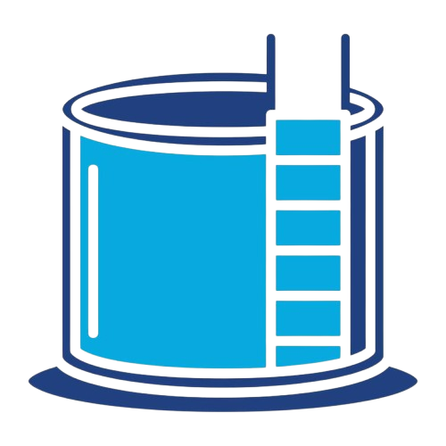

Proyectos de Captación y Soluciones
Iniciativas locales que impulsan el aprovechamiento del agua pluvial.

Sistema doméstico
Instalaciones de canaletas, filtros y tinacos para uso en vivienda. Ideal para riego y lavado.
Sistema comunitario
Implementación en escuelas y edificios públicos para reuso de agua en limpieza o jardines.
Recarga de mantos
Creación de zanjas y pozos de infiltración para aumentar la recarga de acuíferos locales.